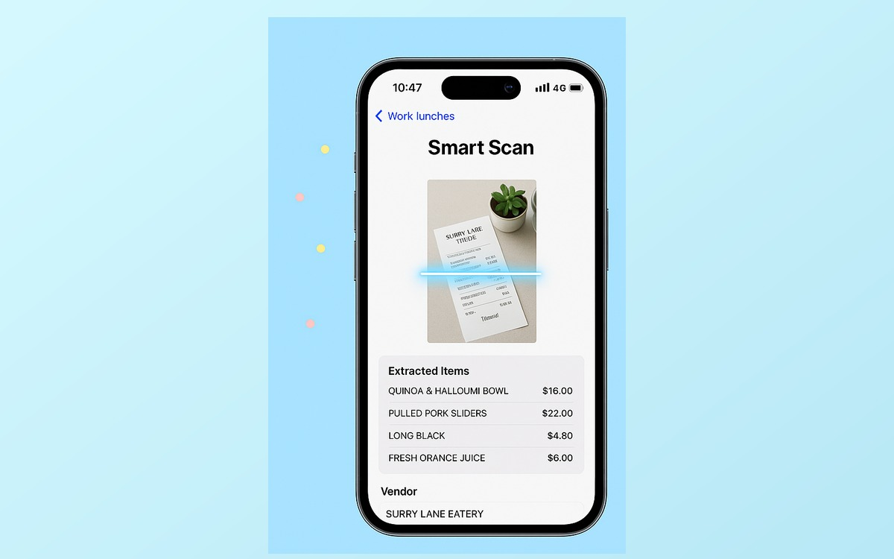

Capture
Camera or upload starts a bill from the receipt already in hand.
Shared expense management · iOS + Web
Track your spending, scan your receipts, split bills with your group, and settle up. TribeBills is a deployed expense app for iOS and web that makes shared money less awkward.

The product journey
A member creates a group, shares an invite, scans or uploads a receipt, reviews the extracted items, assigns splits, and tracks settlement. Guest identity keeps joining lightweight; registration can happen later without losing history.
Receipt intelligence accelerates data entry but never owns the financial record: every item and amount remains editable before the bill is confirmed.
Built independently across backend, web, and iOS. Deployed and actively dogfooded; go-to-market work is currently paused.

The core flow moves from receipt capture to extracted items and then to group split and settlement review.
Designed for degraded conditions
TribeBills coordinates shared expenses; model output remains editable and the product does not move funds between members.
Camera or upload starts a bill from the receipt already in hand.
OCR and categorization propose editable items, totals, and categories.
Independent circuit breakers and manual entry keep bill creation available.
iOS can queue bill creation offline and reconcile when connectivity returns.
Receipt OCR evaluation
The evaluation harness scores merchant, total, tax, item, category, latency, malformed-output, and consistency fields from saved model runs. Public CORD receipts are reported as an Indonesian robustness slice; private Australian receipts are reported separately.
The Australian/local confirmation set is smaller and was OCR-prefilled before human review: 13/13 confirmed receipts matched on merchant, total, tax, item names, prices, and categories after category-ID normalization. It is useful domain evidence, not a blinded benchmark.
Shared product architecture

The web settlement surface is shown separately from the native receipt flow so each medium has a clear role.
| Area | Implementation | Consequence |
|---|---|---|
| AI integration | Receipt extraction, item categorization, manual fallback, circuit breaker design. | A model failure does not prevent a member from creating a bill manually. |
| Backend | 108 routes, 12 Alembic migrations, rate limits, Docker, and cron-secured recurring processing. | Business rules remain consistent across the web and iOS clients. |
| Product detail | Guest identity, promotion path, account deletion, archive flows, legal pages, CSV export. | Groups can begin with low friction without losing history when a guest later registers. |
| Testing | 74 web test files with 722 test cases, plus backend contract and integration tests. | Web flows and backend contracts are covered more deeply than the current native client. |

Product maturity
TribeBills started with a faster Firebase-first path while the product shape was still forming. As the app grew into payment histories, recurring bills, guest access, settlement review, and web/iOS parity, the core financial domain moved into a Postgres-backed FastAPI service.
That shift made the important rules explicit: how bills total, how splits belong to participants, how payments move through review, and how recurring schedules are generated. The goal was not a larger backend; it was one place where the financial logic stays consistent.
Production work then became product design. Data repairs tightened bill and split invariants, analytics was isolated from payment updates, OCR gained fallback paths, and regression tests covered the places where a shared financial record can break.
Mixpanel records OCR use, processing time, categorization use, and suggestion volume. A new offline harness scores merchant, total, tax, item, category, latency, malformed-output, and run-consistency metrics from labelled receipts. The strongest current result is a frozen 40-receipt CORD robustness holdout. The Australian receipt set is treated as local confirmation evidence for now; a broader production accuracy claim needs a larger blinded set.